Markalar
Bu çözümde çalıştığımız markalar
Cadbim; Autodesk Gold Partner ve Adobe Gold Reseller Partner, HP, Microsoft, Chaos ve UltiMaker yetkili iş ortağıdır.
Her parça toleransı içinde üretilir; ama montajda toleranslar toplanır. Tolerans analizi, bu birikimin istatistiksel sonucunu üretim öncesinde hesaplar — sahada montaj tutmadığında değil.
Autodesk Inventor Tolerance Analysis, 3B model üzerindeki geometrik ölçü ve tolerans (GD&T) tanımlarının yığılma döngüsündeki kümülatif etkisini hesaplar. Tek tek bakıldığında hepsi kabul sınırları içinde olan parçalar, zincir hâlinde birleştiğinde montajı tutmayabilir.
Yazılım hem en kötü durum (worst-case) hem de RSS ve istatistiksel sonuçları üretir; Cpk, Sigma, DPMO ve verim yüzdesi gibi ölçütlerle raporlar. Böylece karar, sezgiye değil sayıya dayanır: hangi ölçüye dar tolerans gerçekten gerekli, hangisi yalnızca alışkanlıktan dar tutuluyor?
Bunun doğrudan bir maliyet karşılığı vardır. Gereksiz dar tolerans; daha hassas tezgâh, daha yavaş işleme, daha sık ölçüm ve daha yüksek ıskarta demektir. Analiz, toleransı gerektiği yerde sıkar, gerekmediği yerde gevşetir — parça değiştirilebilirliğinden ödün vermeden işleme maliyetini düşürür.
Montaj içindeki ölçü zinciri model üzerinden kurulur; kritik boşluk ve girişimler tanımlanır.
En kötü durum ile istatistiksel sonuç birlikte değerlendirilir; hangi senaryonun bağlayıcı olduğu görülür.
Cpk, Sigma, DPMO ve verim yüzdesi raporlanır; kalite hedefi sayısal olarak izlenir.
Analiz çıktısı tasarım ve üretim ekipleri arasında ortak dil olur; tolerans tartışması kişisel görüşten çıkar.

En kötü durum tolerans yığılmasını hesaplayın. Parçalar her koşulda birbirini tutar mı?
Monte Carlo simülasyonu ile olasılık dağılımı. Gerçekçi üretim performansı tahmini.
Geometric Dimensioning and Tolerancing standartları. ISO ve ASME Y14.5 uyumlu analiz.
Hangi tolerans en fazla varyasyona katkı sağlıyor? Kritik özellikler önce iyileştirilir.
Kalibrasyon ve ölçüm belirsizliği hesabı. Üretim ve kalite kontrolü koordinasyonu.
Montaj seviyesinde tolerans analizi. Alt montaj ve üst montaj boyutsal uyumluluk.
Kutu yazılım satmıyoruz — beş adımlı kanıtlanmış uygulama metodolojimizle süreci uçtan uca üstleniyoruz.
Fonksiyon ve montaj için gerçekten kritik ölçüler belirlenir.
Ekipçe ortak GD&T dili (ASME/ISO) ve şablonlar tanımlanır.
1D/3B tolerans yığın analizleri tasarım sürecine bağlanır.
CMM/ölçüm sonuçları analiz modelleriyle karşılaştırılır.
Tolerans-maliyet dengesi verilerle düzenli gözden geçirilir.
Yüzlerce kurulumdan damıtılmış, işleyen iyi uygulama setimiz.
Her ölçüye dar tolerans değil; fonksiyonun gerektirdiği kadar hassasiyet.
Tasarım, üretim ve kalite aynı sembolleri aynı şekilde okur.
Montaj problemleri prototipte değil, CAD ortamında yakalanır.
CMM raporları tasarım referanslarıyla birebir eşleşir; tartışma biter.
Gereksiz sıkı toleransın üretim maliyeti görünür kılınır.
Tedarikçiye giden teknik resim yoruma yer bırakmaz.
Cadbim; Autodesk Gold Partner ve Adobe Gold Reseller Partner, HP, Microsoft, Chaos ve UltiMaker yetkili iş ortağıdır.
İlgili yazılım ve donanım sayfaları

Inventor, Vault ve tamamlayıcı araçları tek pakette sunan imalat ürün koleksiyonu.

Parametrik 3B mekanik tasarım ve mühendislik dokümantasyonu için endüstri standardı yazılım.
Tasarımların üretime geçmeden önce dijital ortamda doğrulanmasını sağlayan simülasyon çözümleri.
Tolerans analizi ve montaj doğrulama projelerinde uçtan uca mühendislik danışmanlığı.
İlgili endüstri sayfalarını inceleyin
Aradığınız yanıt burada yoksa uzmanımıza doğrudan sorabilirsiniz.
Teklif, danışmanlık veya eğitim için iletişime geçin.